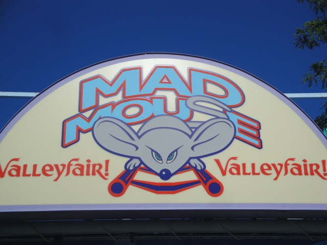

| |
Mad Mouse Review
We're here at Valleyfair to ride Mad Mouse. Once you get in the seat and pull down the lap bar and go up the lifthill. We reach the top and immetietly head straight into a tight turn. We are now going through the switchbacks. While the turns are not that good for a Wild Mouse due to the banking, they are still fun. When on the straight track part of the switchbacks, you can't even tell that the turns are banked until you are actually going through them. After going through 5 of those switchbacks, we then head into a big long turn. This turn is awesome as it's the type of turn where it just pins you to the side and you keep turning. It's a lot of fun. But then you head into a small drop, which takes us all by suprise and gives us some good airtime. We then rise back up and get a little more airtime, before heading through some trims and a sharp turnaround. We then head through another sharp drop and get some more airtime as we go through another rise up into another sharp turn. We then dip down, head through a bunny hop, and rise up again. We then go through a turn into an S curve before turning again and dipping into the brake run. It always seems that the more I ride Arrow Mice, the more I like them. The turns may be watered down, but they're still fun and have some great sharp drops.
6/10
Location: Valleyfair
Opened: 1999
Built by: Arrow
Last Ridden: August 15, 2010
I have ridden this exact same ride at the following parks.
California's Great America
Michigan's Adventure
Mad Mouse Photos

|